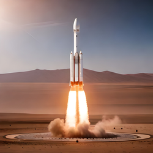

A SpaceX, empresa fundada por Elon Musk, tem se empenhado em tornar a colonização de Marte uma realidade ainda neste século. Para isso, a empresa tem investido em diversos projetos, como a criação do foguete Falcon Heavy e a nave espacial Starship, que terão papel fundamental no processo de colonização.
O Falcon Heavy é considerado um dos foguetes mais poderosos do mundo e é capaz de levar cargas extremamente pesadas ao espaço. Já a Starship será responsável pelo transporte de tripulações e cargas para Marte. Ela é composta por duas partes, a nave espacial e o foguete que a levará ao espaço. Com sua capacidade de carga de até 100 pessoas, a Starship é um elemento chave para a colonização do planeta vermelho.
Além disso, a SpaceX tem realizado testes bem-sucedidos com seus protótipos da Starship, como o voo de teste suborbital SN15. A empresa também tem trabalhado em tecnologias para produzir combustível em Marte, o que seria fundamental para garantir a sobrevivência da tripulação em longo prazo.
Apesar dos desafios envolvidos na colonização de Marte, como a adaptação à atmosfera e aos recursos limitados do planeta, a SpaceX tem se mostrado otimista e ambiciosa em relação ao projeto. A empresa já tem planos para construir cidades em Marte e acredita que a colonização do planeta é importante para garantir a sobrevivência da humanidade a longo prazo.
Por fim, é importante ressaltar que a colonização de Marte é um projeto que envolve não apenas a SpaceX, mas também outras agências espaciais e empresas do setor. Ainda assim, a empresa de Elon Musk tem sido uma das principais impulsionadoras do projeto e tem inspirado muitas pessoas ao redor do mundo a acreditarem na possibilidade de um futuro como uma civilização interplanetária.